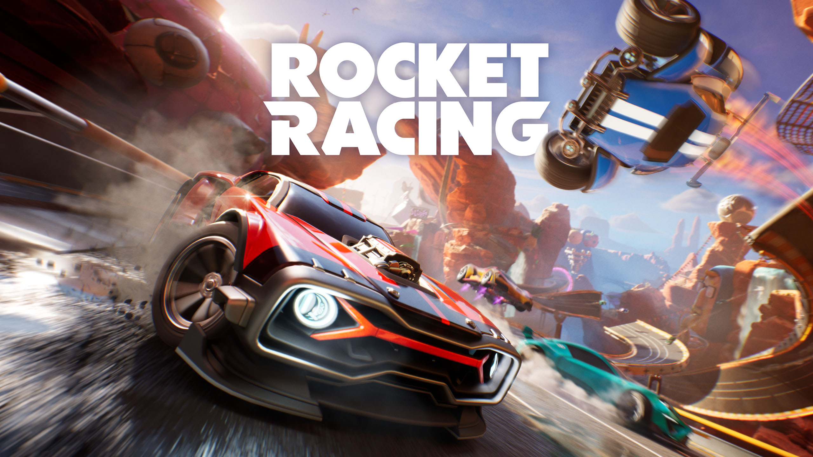

Fortnite: Nuevos modos de juego
En un giro imaginativo y lleno de diversión, el universo de Fortnite se expande aún más con modos de juego únicos y colaboraciones emocionantes. Estas innovadoras adiciones dan un giro creativo a la experiencia Fortnite, mostrando la versatilidad y adaptabilidad del juego en colaboración con otras franquicias.

Lego Fortnite - Construyendo Aventuras:

En "Lego Fortnite", los jugadores se sumergen en un mundo colorido y cuadriculado donde cada pieza es un bloque Lego. Esta parodia de Minecraft lleva la mecánica de construcción de Fortnite a un nivel completamente nuevo, permitiendo a los jugadores crear estructuras Lego personalizadas y explorar un paisaje lleno de bloques. ¡Construir, destruir y crear son las claves para la victoria en este mundo pixelado de diversión!
Fortnite Festival - Ritmo y Diversión Desenfrenada:

La parodia de Rockband, llamada "Fortnite Festival", transforma la isla de Fortnite en un escenario musical vibrante. Los jugadores pueden elegir entre una variedad de instrumentos, desde guitarras hasta tambores y micrófonos, y formar bandas con otros jugadores. Participa en conciertos virtuales, desafía a otros equipos musicales y desbloquea cosméticos exclusivos relacionados con la música. ¡La isla se convierte en una fiesta donde la música y el baile son la clave para la victoria!
Fortnite x Rocket League - Carreras Vertiginosas:

La colaboración con Rocket League lleva la adrenalina al siguiente nivel con "Fortnite Rocket Race". Este modo de juego de carreras combina la velocidad y la competencia de Rocket League con el estilo y los elementos únicos de Fortnite. Los jugadores pueden personalizar sus vehículos, competir en pistas temáticas de Fortnite y desafiar a otros en emocionantes carreras llenas de obstáculos y sorpresas. ¡La isla se convierte en un auténtico campo de juego de carreras!
Eventos Colaborativos Épicos:
The Walt Disney Company acaba de sorprender con su nuevo movimiento, una colaboración con Epic Games para crear su propio universo que estará conectado a ‘Fortnite’. El objetivo es que los jugadores puedan crear sus propías historias con todos los personajes que tiene Disney, además que se podrán compartir entre franquicias. El mismo Bob A. Iger,, director ejecutivo de The Walt Disney Company, destacó la importancia de la alianza para la compañía.
En conjunto, estas incorporaciones transforman el paisaje de Fortnite en un lugar donde la creatividad, la música y las carreras se entrelazan en un tapiz de diversión y emoción. Fortnite sigue demostrando su capacidad para adaptarse y sorprender a su comunidad, convirtiéndose en un verdadero universo de entretenimiento interactivo. ¡La isla de Fortnite se convierte en el escenario perfecto para que la imaginación se despliegue!
Elaborado por: Rodriguez Ortiz Jorge Angel 6to 23
Escuela Preparatoria No. 1 UAEH
Aplicaciones computacionales web y móviles V2.1
6 de Febrero de 2024